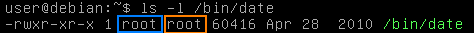
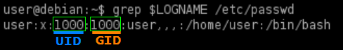
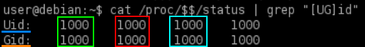

Permissions in Linux
Permissions in Linux are a relationship between users, groups, and
files & directories
•
Users can belong to multiple
groups.
•
Groups can have multiple
users.
•
files and
directories defines their permissions in terms of:
◇ a
user ◇ a
group ◇ all
"other" users (world)
Users ◇
User accounts are configured in the /etc/passwd file.
◇
User password hashes are stored in the /etc/shadow file.
◇
Users are identified by an integer user ID (UID).
▪ The “root”
user account is a special type of account in Linux. It has an UID of 0, and the
system grants this user access to every file.
Groups ◇
Groups are configured
in the /etc/group file.
◇
Users have a
primary group, and can have multiple
secondary (or supplementary) groups.
▪ By default, a
user’s
primary group has the same name as their
user account.
Files and
Directories ◇ All files & directories have a
single owner and a group.
◇ Permissions are defined in terms of operations:
▪ read(r)
-
file → contents can be read
-
directory →
files and subdirectories can be listed
▪ write(w)
-
file → contents
can be modified
-
directory → files and subdirectories can be created in
the directory
▪ execute(x)
-
file → can be executed (i.e. run as
some kind of process).
-
directory → can be entered. Without this
permission, neither the read nor write permissions will work.
◇ There are three sets of permissions
▪
one for the owner
- Only the owner can change permissions
▪ one for the group
▪ one for all
“other” users (can also be referred toas “world”).
Each User(UID)/Group(GID) has 3 IDs: ◇
real ID ▪ Id defined in /etc/passwd
▪ Ironically is actually less often
to check the user's identity
◇
effective ID →
▪ normally equal
to their real ID
▪ set to another user’s real ID when when executing a process as that user
▪ used in
most access control decisions to verify a user (example: whoami use the effective ID)
◇
saved ID ▪ used to ensure that SUID processes can temporarily switch a user’s
effective ID back to their real ID and back again without losing track of the original effective
ID
Current process:
UID and
GID:
target@debian:~$ grep $LOGNAME /etc/passwd
Current process:
real ID,
effective ID,
saved ID, file system ID
target@debian:~$ cat /proc/$$/status | grep "[UG]id"
Bibliography:• TCM Security: Linux Privilege
Escalation for Beginners (
https://academy.tcm-sec.com/p/linux-privilege-escalation)
•
Tib3rius: Linux Privilege Escalation for OSCP & Beyond! (
https://www.udemy.com/course/linux-privilege-escalation/)